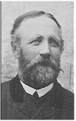

Augustinus Lundström
Nämndeman, Bonde på Villvattnet 1, Kalvträsk, 1/16 mtl. Blev 65 år.
| Född: | 1841-04-09 Villvattnet, Kalvträsk, Burträsk sn. | |
|---|
| Död: | 1906-12-13 Villvattnet, Kalvträsk, Burträsk sn. [1] | Förmånstagare. |
|---|
| Vigsel: | 1864-02-13 Villvattnet, Kalvträsk, Burträsk sn. |
|---|
| Barn: |
|---|
| Karl (Kalle) August Lundström (1865 - 1901) |
| Anton Konrad Lundström (1869 - 1950) |
| Johan Victor Lundström (1872 - ) |
| Olof Signar Lundström (1874 - 1877) |
| Olof Signar Johansson (1878 - 1904) |
| Oskar Fredrik Johansson (1882 - 1913) |
Noteringar
Tar efternamnet Lundström. Övertar fädernehemmanet Villvattnet 10 i Kalfträsk.
Personhistoria
| Årtal | Ålder | Händelse |
|---|
| 1841 |
|
Födelse 1841-04-09 Villvattnet, Kalvträsk, Burträsk sn |
| 1864 |
22 år |
Vigsel Anna Charlotta Andersdotter 1864-02-13 Villvattnet, Kalvträsk, Burträsk sn |
| 1865 |
24 år |
Sonen Karl (Kalle) August Lundström föds 1865-04-15 Kalvträsk, Burträsk fs, Burträsk sn |
| 1869 |
28 år |
Sonen Anton Konrad Lundström föds 1869-06-26 Kalvträsk, Burträsk fs, Burträsk sn |
| 1872 |
31 år |
Sonen Johan Victor Lundström föds 1872-04-17 Villvattnet, Kalvträsk, Burträsk sn [1] |
| 1874 |
33 år |
Sonen Olof Signar Lundström föds 1874-07-31 Kalvträsk, Burträsk fs, Burträsk sn |
| 1877 |
35 år |
Sonen Olof Signar Lundström dör 1877-01-19 Kalvträsk, Burträsk fs, Burträsk sn |
| 1878 |
37 år |
Sonen Olof Signar Johansson föds 1878-06-23 Villvattnet, Kalvträsk, Burträsk sn [1] |
| 1882 |
40 år |
Sonen Oskar Fredrik Johansson föds 1882-02-06 Villvattnet, Kalvträsk, Burträsk sn [1] |
| 1883 |
41 år |
Fadern Carl Olof Johansson Lundström dör 1883-01-21 Villvattnet, Kalvträsk, Burträsk sn [2] |
| 1893 |
52 år |
Modern Gustava Johanna Jonsdotter dör 1893-11-01 Villvattnet, Kalvträsk, Burträsk sn [3] |
| 1894 |
53 år |
Makan Anna Charlotta Andersdotter dör 1894-04-24 Kalvträsk, Burträsk sn |
| 1896 |
54 år |
Systern Christina Catharina Karlsdotter Lundström dör 1896-04-01 Villvattnet 13, Granträsk, Burträsk fs, Burträsk sn [4] |
| 1901 |
60 år |
Sonen Karl (Kalle) August Lundström dör 1901-04-18 Villvattnet, Kalvträsk, Burträsk sn [5] |
| 1904 |
63 år |
Sonen Olof Signar Johansson dör 1904-08-03 Villvattnet, Kalvträsk, Burträsk sn [1] |
| 1906 |
65 år |
Död 1906-12-13 Villvattnet, Kalvträsk, Burträsk sn [1] |
Källor
| [1] | Burträsk AIIA:1D (1900-1910) fol. 1558 k.4/7 |
| |
| | |
| [2] | Burträsk AI:14D (1881-1892) fol. 994 r.3 k.2/5, F:2 (1881-1884) 6/1883 k.3/7 |
| |
| | |
| [3] | Burträsk AI:15D (1892-1899) fol. 1407 k.7/14, F:2 (1893-1894) 177/1893 k.7/7 |
| |
| | |
| [4] | Burträsk AI:15D (1892-1899) fol. 1439 k.8/14 |
| |
| | |
| [5] | Burträsk AIIA:1D (1900-1910) fol. 1559 k.4/7 |
| |
|
|  |
| Augustinus Lundström. Kortet fick jag 2002-04-20 av Thomas Lundström (zigward@hotmail.com) |
| |
 |
| Augustinus Lundström med sonen Oskar. |
|

{kind=link}